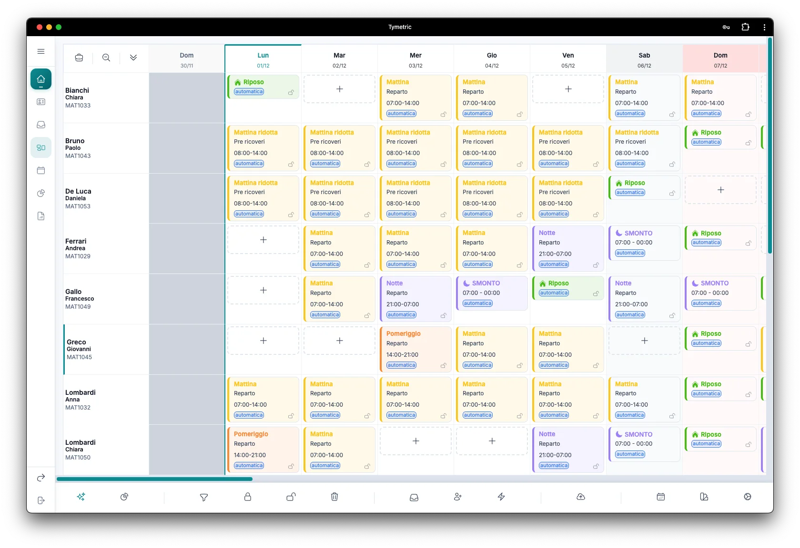
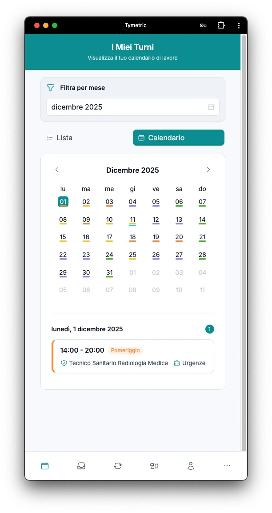

Software per la pianificazione dei turni sanitari
AI, interfaccia e motore. Ognuno fa la sua parte.
Racconti all'AI quello che una regola non può dire. Lavori a mano con un'interfaccia pensata per il coordinatore. Generi il piano con un motore che rispetta le regole del reparto.
Tutto quello che non sta in una regola, lo racconti
Ogni reparto ha accordi, eccezioni e richieste che cambiano di mese in mese. Trasformarle in regole appesantirebbe la configurazione; lasciarle fuori costringerebbe a correggere a mano. Con Tymetric basta chiederle, come a un collega, e l'AI le porta nel piano.
- «Il 18 l'ambulatorio resta chiuso: ricalcola solo quella settimana.»
- «Neri è in formazione dal 20 al 24.»
- «Questo mese in sala 2 serve sempre un senior al mattino.»
- «Ricci e Galli non fanno la stessa notte.»
- «Il venerdì di guardia va a chi ha fatto meno notti.»
- «Tutto quello che ho già fissato resta com'è.»
Nella modalità Deep planning puoi anche allegare un file Word o Excel, come le indicazioni del primario per il mese.
- Modelli di frontiera
- Usiamo sempre modelli di frontiera, capaci di ragionare sul mese intero.
- Dati nell'Unione europea
- Elaborazione configurata in UE: il modello non trattiene nulla e non si addestra sui vostri dati.
- Le regole delicate restano al sistema
- Riposo dopo la notte, turni pubblicati e assenze non si toccano, salvo un'eccezione decisa da te.
- Approvi tu
- Nel calendario non cambia nulla senza la conferma del coordinatore.
Dal racconto del mese al piano approvato
Descrivi il mese come lo vedi tu: chi fa i cicli, chi ha un'esigenza particolare, quali eccezioni concedi. La modalità Deep planning ti fa le domande che servono, ti mostra il piano e lavora da sola fino al resoconto.
- 1RaccontiIl mese con le sue eccezioni, anche allegando le indicazioni del primario.
- 2Chiede solo quando servePrima controlla i dati. Se un'indicazione non torna con il calendario, te lo dice prima di toccare un turno.
- 3Simula e rifinisceLavora sul mese intero, settimana per settimana. Quello che il motore non sa esprimere come regola, lo sistema direttamente sui turni.
- 4ApproviIl resoconto elenca coperture, eccezioni usate, anomalie rimaste e cosa riportare nel gestionale. Nel calendario non cambia nulla finché non approvi tu.
Bruno è in formazione dal 2 al 4. Greco e Fontana si alternano sulla guardia del venerdì. A Marino concedo tre notti di fila prima di Natale.
Prima di partire: il reparto consente al massimo 2 notti di fila, e con tre Marino supera il limite. Applico l'eccezione solo a Marino?
- CopertureTurni coperti e scoperti, giorno per giorno
- Eccezioni usateMarino: 3 notti di fila a dicembre
- Anomalie rimasteQuello che non è riuscito a sistemare
- Da riportare nel gestionaleScostamenti da passare all'amministrazione
- Le correzioni toccano solo ciò che chiedi«Sposta il congresso, il resto non si tocca»: cambiano solo quei giorni.
- Ti dice cosa non è riuscito a fareLe anomalie rimaste sono nel resoconto, non nascoste nel piano.
- Usa il motore, non lo sostituisceLe regole rigide del reparto valgono anche nella modalità Deep planning; le eccezioni sono quelle che hai chiesto tu.
Mya, l'assistente AI integrato
Fuori dalla modalità Deep planning, Mya lavora con te ogni giorno: risponde alle domande, prepara le operazioni e le applica solo quando le confermi.
- Ovunque nell'appRisponde su dati del reparto e funzionamento del sistema.
- In pianificazioneAssegna, scambia, fissa, rigenera e cambia il fabbisogno in linguaggio naturale. Le conversazioni restano salvate per reparto e sessione.
- Sui turni pubblicatiQuando un turno pubblicato cambia, prepara la modifica nella sessione dedicata e la lascia a te da confermare.
Elaborazione nell'UE, nessuna conservazione presso il modello. GDPR · AI Act
Quando lavori a mano, tutto è a portata di clic
Viste su misura, assegnazioni guidate, decine di turni modificati insieme. E il sistema ti avvisa prima che tu sbagli.

Viste su misura
- Per persona o per attività, in tre densità
- Nomi per cognome, matricola o team; colori delle fasce a scelta
- Desiderata e assenze evidenziate sulla griglia: vedi subito quali sono rispettate
- Vedi anche la fine del mese precedente, così notti e riposi a cavallo del mese tornano
- La scheda di ogni persona, con carichi, anomalie e assenze
Assegnazioni in pochi clic
Percorso guidato (ruolo, fascia, attività), oppure parti dalle attività con fabbisogno ancora aperto. Per ogni turno da coprire vedi chi può farlo, in ordine di idoneità.
Avvisi che guidano
Prima di salvare, il sistema ti avvisa su competenze e disponibilità e ti mostra chi è già impegnato quel giorno. Per chi non può, il motivo: assenza, riposo minimo, giorni consecutivi, regole del reparto.
Decine di turni insieme
Selezioni i turni che ti interessano, anche intere giornate della griglia, e li blocchi, sblocchi o elimini in un colpo. Prima di confermare sai quanti turni cambieranno.
- 1 · DateGiorni della settimana, festivi, «ogni N giorni» o un intervallo.
- 2 · ProfessionistiUno o più.
- 3 · AzioneRiposo, assenza o turno in un'attività.
- 4 · AnteprimaCompatibili e incompatibili divisi: assegni o scarti.
- Riposo minimoRispettato
- Giorni consecutiviL. Moretti, 9–16 nov · Vai al turno
- Fuori disponibilitàRispettato
- Turni scopertiChirurgia, notte del 22 · Vai al turno
- Fuori ruoloRispettato
Anomalie in evidenza
Prima di pubblicare vedi ogni anomalia (turni scoperti, giorni consecutivi, riposo minimo, monte ore, fuori ruolo, fuori disponibilità) e da ognuna risali al turno che la genera.
E poi contatori personalizzati, cruscotti di reparto e di persona, storico di ogni modifica, export Excel.
10 regole rigide che il motore non viola mai. Dentro quei limiti, contano le preferenze del reparto.
Le regole fisse si configurano una volta sola, con i valori scelti dal reparto, e le applicano sia il motore sia l'AI.
- 01Giorni massimi consecutivi
- 02Ore di riposo tra due turni
- 03Turni accoppiati
- 04Turni compatibili
- 05Riposi forzati
- 06Cicli
- 07Massimo di turni
- 08Distanza minima
- 09Weekend alternati
- 10Domeniche alternate
Ogni regola ha un valore deciso dal reparto: le trovi spiegate una per una nella pagina del motore. Smonto, festività con patrono della sede e limiti CCNL su guardie e reperibilità sono già pronti.
Regole che si rileggono come frasi
Un percorso guidato chiede il valore, i turni interessati e i destinatari: tutto il reparto, solo Comparto o solo Dirigenza, un gruppo, una persona. La descrizione la scrive il sistema.
In ogni pianificazione puoi spegnere una regola o dare a qualcuno un limite diverso, mese per mese. Come funziona il motore, nel dettaglio
Massimo 2 turni al mese, al massimo 1 per metà mese
«Massimo 2 turni al mese, al massimo 1 per metà mese in fascia Guardia – 7 professionisti»
Come sceglie tra le persone idonee
Il motore non sceglie a caso tra chi è idoneo: confronta le persone su oltre 100 criteri. Tu decidi quanto pesa ciascuna delle 6 opzioni, su una scala da «Molto bassa» a «Molto alta»: niente formule.
| Opzione | Peso |
|---|---|
| Equità sulle fasce orarie | Alta |
| Rotazione tra attività | Bassa |
| Festività | Media |
| Indice di stressmisura il carico di lavoro, per distribuirlo meglio | Molto alta |
| Reperibilità | Media |
| Pattern di turnazione | Media |
Esempio di configurazione, da Molto bassa a Molto alta.

Il team ha i turni in tasca
Si installa sul telefono, in italiano e in inglese. Richieste e cambi turno arrivano al coordinatore senza fogli né messaggi sparsi.
- I miei turni
- In calendario o in lista, con i turni del reparto.
- Desiderata
- «Non disponibile», «Escludi fasce» o «Scegli fascia» per chiedere un turno preciso.
- Cambi turno
- Scambio o sola copertura: il collega accetta, il coordinatore approva, il sistema avvisa se mancano requisiti.
- Assenze e imprevisti
- Ferie, formazione e congressi con approvazione. Un'assenza improvvisa avvisa il responsabile via email.
Per tutela della privacy le motivazioni sanitarie non si registrano: basta «Non dichiarata».
Il pannello di amministrazione, per chi governa più reparti
Tutto quello che c'è sopra resta uguale in ogni reparto. La struttura aggiunge un menu di amministrazione per vedere e muovere l'insieme.
- Vista multi reparto
- I piani di tutti i reparti in un unico posto.
- Copertura su tutto il personale
- Dove mancano persone e dove ce ne sono, su tutta la struttura.
- Report di struttura
- I dati di tutti i reparti, pronti per la direzione.
- Muovi il personale tra reparti, anche temporaneamente
- Competenze in un catalogo unico, con i ruoli della tassonomia sanitaria
- Sedi, reparti e attività, con coordinatori anche di più reparti
Analisi delle coperture per il piano ferie
Valuti ferie, congressi o formazione e vedi subito l'effetto sulla copertura di tutto il periodo, per esempio «con queste ferie, il 27 dicembre resta un solo medico abilitato all'ecografia». Così decidi sapendo già cosa succede alla copertura.
Conformità letta sulle regole del reparto
Le statistiche di conformità leggono i limiti impostati dal reparto invece di soglie generali.
Approfondisci per ruolo e per funzione
Richiedi informazioni
Interfaccia, motore e app da 1.190 € l'anno, IVA esclusa, primi 3 mesi in prova senza canone. Calcola il tuo prezzo
Preferisci la posta? Scrivici a info@tymetric.com